Integrations via Zapier#
Grist can be connected to thousands of other services via Zapier. Grist can trigger a workflow whenever there is a new or updated record in a table, leading to action in another service. Conversely, workflows triggered by other services can consult, add, or update records in Grist tables.
Example: storing form submissions#
Suppose we have a form for collecting votes on the color of a proposed new bike shed:
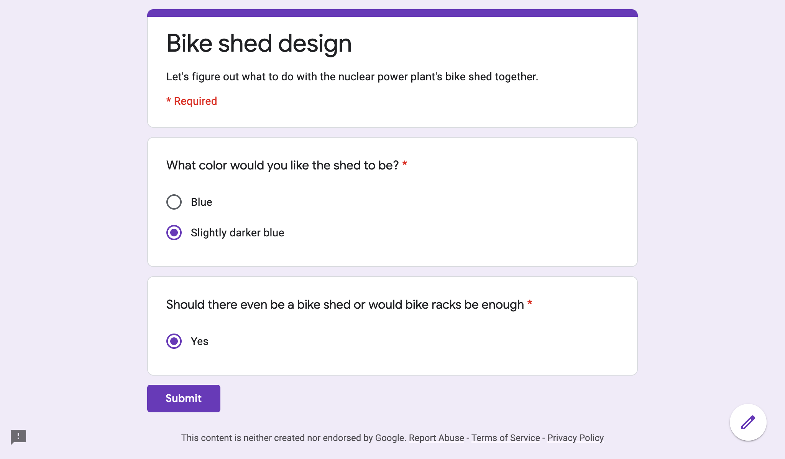
The form is set up using Google Forms (for this example), and we want the responses to be stored in a Grist document:
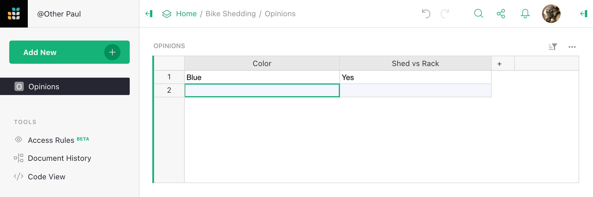
One way to make this happen is with Zapier. So let’s sign in on the Zapier site and then visit the Grist integration page:

We’d like to pair Grist with Google forms. Zapier supports several form providers, and the overall process for integration is similar for them all. Just type in the provider you want. For this tutorial, we’re going with Google forms.
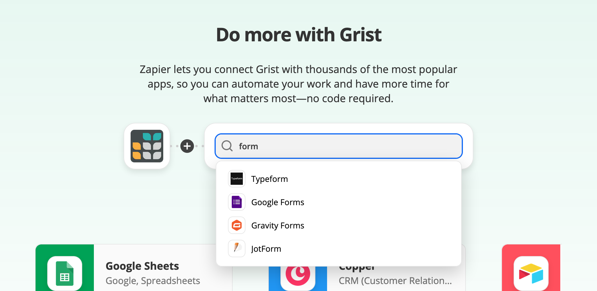
Once we’ve picked the provider to integrate with, we need to pin down exactly what
we want it to do, from the available “triggers” and “actions.”
In this case, we choose that when there is a New Response in Spreadsheet trigger
for Google Forms, we will do the Create Record action in Grist.
We click the build button to start filling in the details:
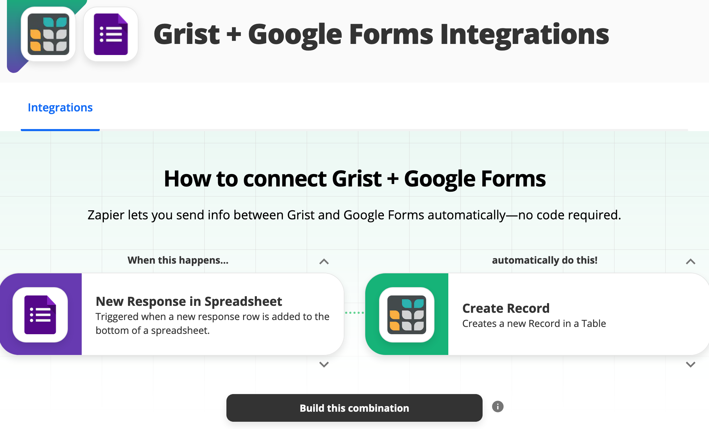
Since the triggering event for the integration will happen in Google Forms, we are first asked to give Zapier some access rights to your forms. Once that is done, we are prompted to confirm which spreadsheet to use:

Then we specify which worksheet within the spreadsheet to use (easy if there is just one). For Zapier’s benefit in a later step, it is important that there be at least one sample response already in the spreadsheet.

That’s the Google side done. Now for the Grist side. We are prompted to give an API key for Grist, so we set up an API key if we haven’t already. To give precise access rights, we could set up a user account just for the integration, and give it access to just what it needs, and supply its API key.

Now we confirm the team to use - personal docs or a team site we have access to:
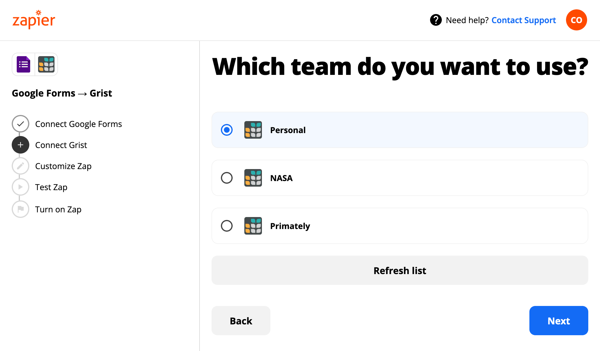
Then we pick the Grist document to send form responses to:
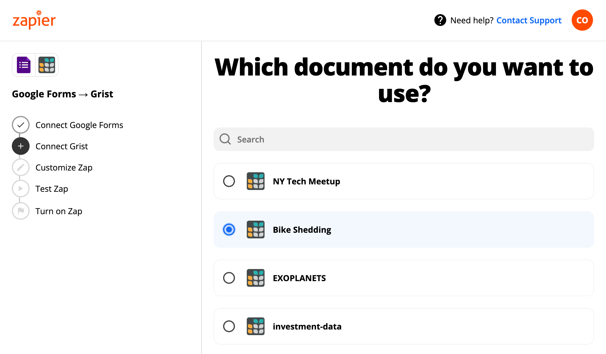
And then we pick the table to use within that document. It should have columns to store whatever parts of the form we want to keep. It is important to make this table if it doesn’t exist already; it won’t be created automatically. It isn’t important to match column names with questions.
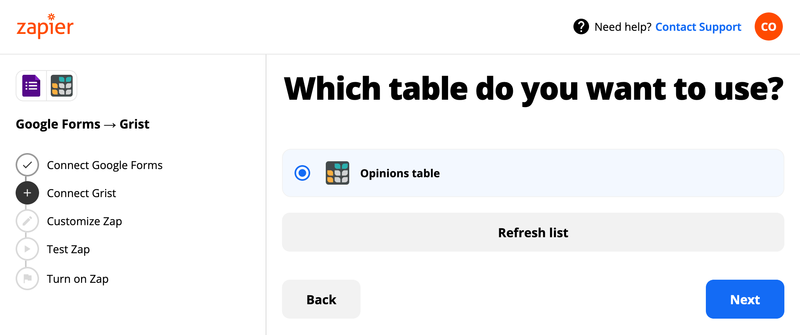
Zapier allows for flexible mapping of fields between services. In our case, a one-to-one mapping works fine:

Ok! Now we can click our button to have Zap test our integration.

All going well, we can turn the “Zap” on and leave it run.


Now is the time to try making some submissions, and go have a cup of something. Free “Zaps” may run periodically to check for new submissions, so don’t expect immediate results in all cases. But eventually, you should see the votes pouring in!
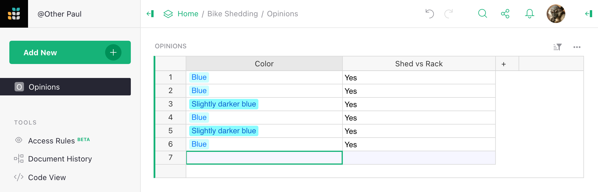
Example: Sending email alerts#
We’ve seen an example of an outside service sending data to Grist. Now let’s
look at an example of Grist sending data to an outside service. Continuing
our form example, where a Grist document is accumulating votes for a preferred
color: now suppose that every time a new vote comes in we want to send an email
summarizing which option is in the lead. We write a formula to prepare the text
in a Text cell:
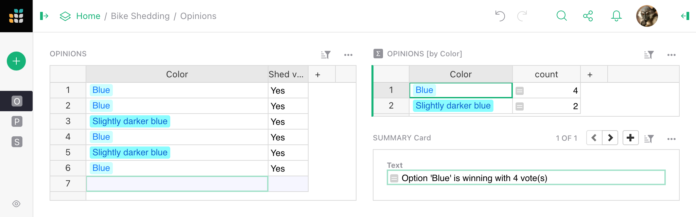
Let’s return again to the Grist integration page on Zapier. There are several mail integrations. For this example, we pick Gmail:

Once we’ve picked the service to connect, now we choose exactly what we want
it to do. In this case, we choose that when there is a New or Updated Record
in Grist, we will Send Email in Gmail:
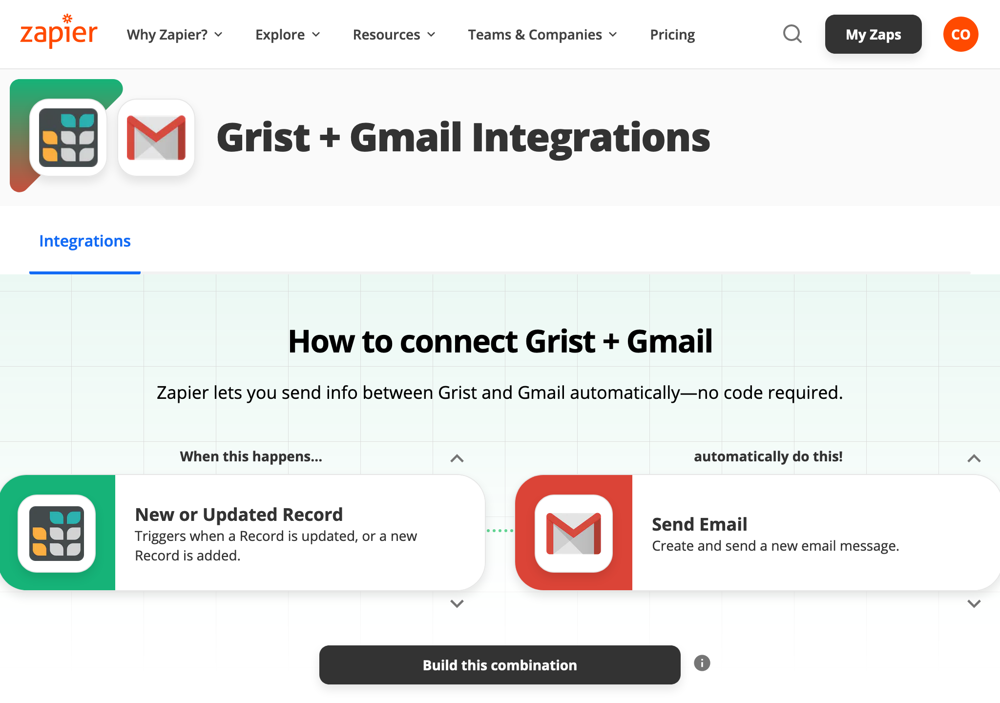
Once we’ve chosen a Grist account to use as before, we can pick a table within
a document to monitor. In fact we pick a specific column to monitor. Typically
this would be an Updated At column (see Timestamp columns),
but it can in fact be anything. In our case we just have a single cell to watch.

On the Gmail side, we can email to pre-set addresses, or this could be configured dynamically (we’ll see an example of how in a moment):

We choose to set the body of the email to contain “Custom” content, in this case
the Text cell we calculated earlier.

And we’re done! Zapier will offer to make a quick test that emails go out correctly:

Then you can make some votes and watch the system work. Zapier has a “run zap” functionality to force an integration to update immediately if you are impatient (otherwise it may only happen periodically):
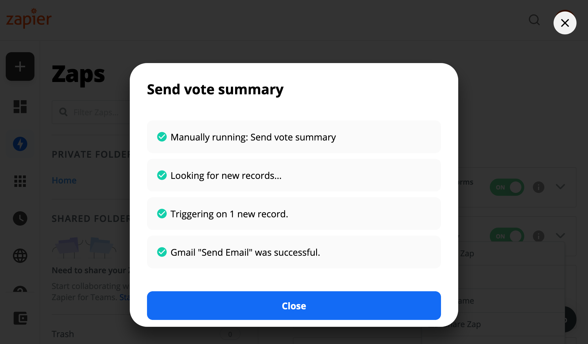
And emails should start showing up in the desired inboxes. May the best almost indistinguishable shade win!